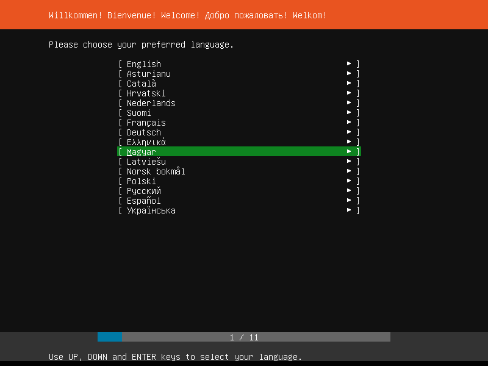

Telepítés:
1. lépés: Nyelv kiválasztása. (Mivel ez egy karakteres operációs rendszer így a billentyűzet segítségével tudok beállítgatni magadnak a dolgaidat. Egérre egyáltalán nem lesz szükség)
|  |
|---|
2. lépés: Válaszd ki a billentyűzet kiosztást.
3. lépés: A telepítés inenntől veszi kezdetét! Válaszd ki az 'Ubuntu telepítése' gombot.
4. lépés: Itt adja meg a hálózat kapcsolati adatait.
5. lépés: A következő képen megadhatod a proxy szerver adataid, ha van. Ha nincs, lépj tovább.
6. lépés: Majd itt megadhatjuk az egyedi repo szervert is ha van, de ha nincs akkor itt is csak lépj tovább.
7. lépés: Particionálás. Itt adjuk meg hova telepítsük az operációs rendszert
6. lépés: Felhasználói fiók hozzáadása. Itt hozza létre a profilját és adja meg a szerver nevét. (ékezetes karaktereket, ne használjunk)
7. lépés: A maradék dolgokat ugorjuk át mivel csak egy minimális szervert telepítünk és ezeket majd utólag telepítjük rá majd gépre.
8. lépés: Innentől már csak a beállításainknak megfelelően telepíti le az oprendszert ami eltarthat egy edeig.
Gratulálunk! Ügyesen telepítetted a rendszert! Ha minden jól sikerült az alábbi képpen kéne kinéznie a dolognak:
Hasznos parancsok:
- sudo - rendszergazdaként futtatni egy parancsot
- apt - package manager a linuxhoz
- shutdown -h - leállítás
- reboot - újraindítás
- lshw - hardware információk
- mc - fájlkezelő
- cd - Könyvtár változtatása
- history - parancs előzmények
- clear - képernyő törlése
- echo - új fájl létrehozása
- type - fájl tartalma kiírása
- cp - fájl másolása
- nano - szövegszerkesztő
- mkdir - mappa létrehozás
- rmdir - mappa törlés
- tree - könyvtár szerkezetek kilistázása
- ls - jelenlegi mappában lévő fájlok
- rm - mappa/fájl törlése